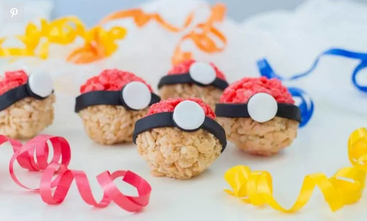

Pokeball Rice Krispies Treats

Simple to make, they are based on the traditional Rice Krispies treats recipe and trimmed with fondant.
Ingredients
- 2 tbsp butter, divided
- 2 cups mini marshmallows, divided
- 3 cups Rice Krispies cereal, divided
- ½ tsp red gel food coloring/li>
- Red decorating frosting
- 3-4 oz. black fondant
- 1-2 oz. white fondant
Steps
- Line a baking sheet with wax paper and set aside.
- In one medium-sized saucepan, melt 1 tbsp butter over medium-high heat.
- In a clean, medium-sized saucepan repeat the same steps with your remaining butter, marshmallows.
- Fold in remaining rice cereal.
- Stick white fondant circle on the black fondant circle. (Hint: usually the fondant is sticky enough to hold on its own but if not, you may use your decorating frosting to secure).